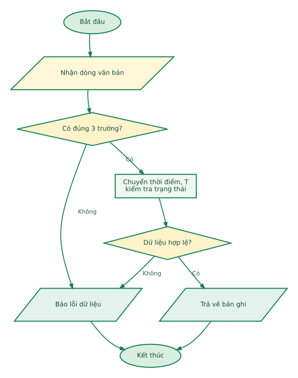

Khóa học / Mô-đun 2 / Bài 06
01 Mục tiêu và kiến thức tiên quyết
- Thao tác chuỗi bằng indexing, slicing, split(), strip() và so sánh.
- Tách, chuyển kiểu và kiểm tra một bản ghi CSV đơn giản theo quy tắc đã cho.
- Xử lý lỗi dữ liệu văn bản mà không kết luận về phần cứng.
Kiến thức tiên quyết: bài trước, kiến thức lập trình tương ứng.
02 Tình huống kỹ thuật
Thiết bị đo gửi một dòng văn bản “2026-11-20T08:00:00,25.6,OK”. Chương trình cần tách thời gian, giá trị nhiệt độ và trạng thái; loại bỏ các bản ghi thiếu hoặc sai định dạng.
Chuỗi: 2026-11-20T08:00:00,25.6,OK.
Thời điểm, nhiệt độ 25,6 °C và trạng thái OK, hoặc lỗi nhập liệu.
03 Kiến thức và thuật ngữ cốt lõi
Chuỗi là dãy ký tự
str trong Python 3 biểu diễn văn bản Unicode. Truy cập s[i] lấy ký tự theo vị trí bắt đầu từ 0; thao tác cắt s[a:b] không bao gồm chỉ số b.
Chuỗi bất biến
Phương thức strip(), replace(), upper() tạo ra chuỗi mới thay vì sửa trực tiếp đối tượng cũ. Điều này khác với list có thể gán lại phần tử.
Tách bản ghi
split(",") thích hợp với cấu trúc ba trường đơn giản; CSV có dấu phẩy nằm trong ngoặc kép phải sử dụng thư viện csv đúng cách ở bài sau.
Xác thực dữ liệu
Sau khi tách, kiểm tra số trường, định dạng thời gian và float. Không sử dụng except rộng để che mọi lỗi; chỉ bắt lỗi dự đoán được.
04 Xây dựng và kiểm tra thuật toán
Trước khi xem chương trình, hãy đọc dữ liệu đầu vào, chọn điều kiện rẽ nhánh hoặc lặp, rồi dự đoán kết quả. Mã giả mô tả ý nghĩa thuật toán; không phải cú pháp Python thực thi được.

Mã giả
Lần vết các bước phân tích
Đây là lần vết các dòng mã giả, không phải trình thông dịch Python. Tự kiểm tra nhánh điều kiện bằng bảng ca kiểm thử ở mục 07.
05 Chương trình Python đã kiểm tra
Đọc mã, dự đoán kết quả và chạy tệp bai_06.py trong thư mục code. Các mã bài 9 trở lên có thể cần dữ liệu đi kèm từ thư mục data.
from datetime import datetime
def tach_ban_ghi(dong: str):
truong = [phan.strip() for phan in dong.split(",")]
if len(truong) != 3:
raise ValueError("Can dung 3 truong")
thoi_diem = datetime.fromisoformat(truong[0])
nhiet_do_c = float(truong[1])
if truong[2] not in {"OK", "ALARM"}:
raise ValueError("Trang thai khong hop le")
return thoi_diem, nhiet_do_c, truong[2]
moc, nhiet_do, trang_thai = tach_ban_ghi(
"2026-11-20T08:00:00,25.6,OK"
)
print(moc.isoformat(), f"{nhiet_do:.1f} °C", trang_thai)
06 Thử nghiệm tham số có hướng dẫn
Thay đổi đầu vào để kiểm tra trực giác và đối chiếu với kết quả dự đoán. Trình khám phá này được lập trình lại bằng JavaScript theo bài toán minh họa, không phải kết quả chạy mã Python.
07 Thực hành và kiểm thử
Thực hiện các nhiệm vụ theo thứ tự từ có hướng dẫn đến độc lập; ghi lại kết quả thực tế của chương trình và so sánh với kết quả kỳ vọng.
- Thay chuỗi đầu vào bằng trạng thái ALARM và giải thích kết quả.
- Thử dữ liệu trống để kiểm tra lỗi số trường.
- Mở rộng bản ghi với mã cảm biến ở đầu, cập nhật quy tắc tách.
Bảng kiểm thử bắt buộc
| Ca kiểm thử | Dữ liệu/điều kiện | Kết quả kỳ vọng |
|---|---|---|
| Đúng định dạng | 3 trường, trạng thái OK | Tách thành công |
| Thiếu trường | thời gian,25.6 | ValueError |
| Sai số | thời gian,abc,OK | ValueError |
| Trạng thái lạ | thời gian,25.6,BAD | ValueError |
08 Vận dụng vào chuyên ngành
Tách nhật ký nhiệt độ theo thời gian từ bộ ghi dữ liệu của kho lạnh.
Tách bản ghi điện áp, nhiệt độ từ cổng xuất dữ liệu của bộ kiểm tra ô tô.
09 Trắc nghiệm và phản hồi
Mỗi câu có bốn phương án A/B/C/D. Chọn một phương án cho mỗi câu rồi nhấn Chấm và giải thích để xem vì sao từng phương án đúng hoặc chưa phù hợp.
Rubric tham khảo (100 điểm)
| Thành phần | Điểm |
|---|---|
| Đặc tả dữ liệu, đơn vị, giả thiết | 20 |
| Mã giả, trình tự thuật toán | 20 |
| Mã Python và tổ chức hàm/dữ liệu | 25 |
| Kiểm thử, đối chiếu, phân tích sai số | 25 |
| Giải thích và đề xuất cải tiến | 10 |
10 Nhật ký học tập và đánh dấu tiến độ
Tiến độ và ghi chép chỉ lưu trong trình duyệt hiện tại; không đồng bộ với hệ thống điểm của trường.
11 Tài liệu tham khảo và nguồn
| Nguồn | Vai trò và phạm vi sử dụng |
|---|---|
| Pythonlearn-06-Strings.pptx | C. Severance, Python for Everybody — Chương 6, chuỗi ký tự. |
| PythonCoban_UTEHY.pdf | N. V. Hậu và cộng sự, Python cơ bản — các bài nền tảng tương ứng. |
| Python 3 Documentation | Tài liệu chuẩn của ngôn ngữ Python 3. |
Học liệu mới được viết lại theo định hướng sư phạm. Không trích lại nguyên văn hoặc phân phối các slide/sách gốc trong gói website.